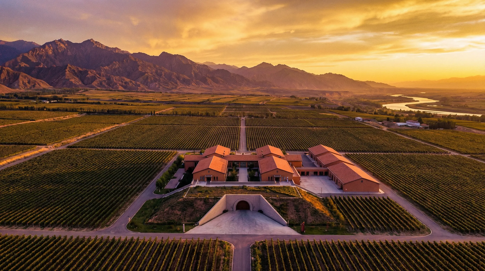
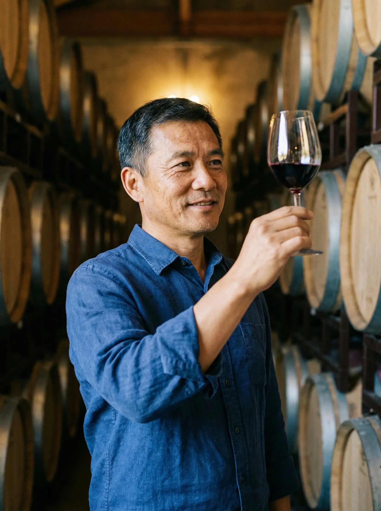
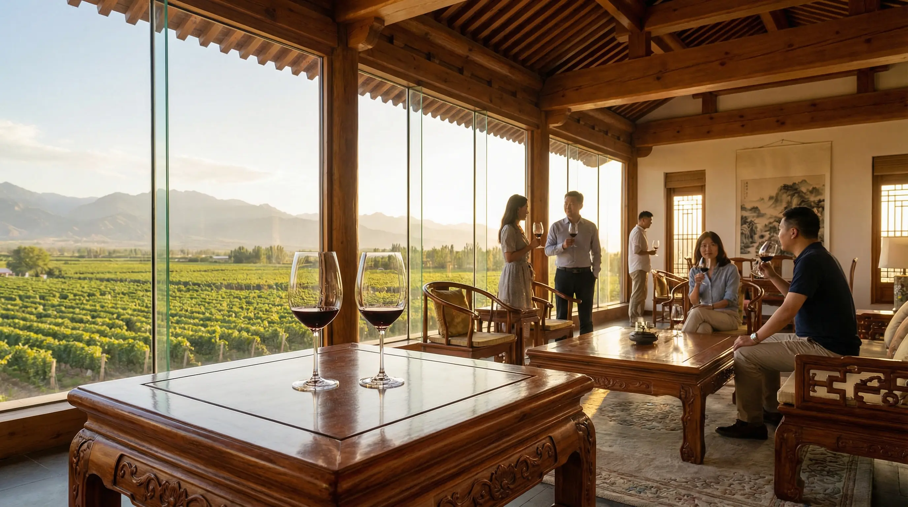

贺兰山下，每一杯都是风土的诗
Yunyin Estate — Ningxia Wine Country
Terroir
贺兰山东麓，海拔1100米，年日照3000小时，昼夜温差15度。砾石土壤赋予葡萄独特的矿物质风味。
让贺兰山的风土在每一瓶酒中低语。


Winemaker
酿酒师陆远山，波尔多大学葡萄酒学硕士，法国修炼十年后回国。2016年回到父亲的葡萄园，创办云隐酒庄。
"世界不缺好酒，但中国的风土值得被世界看见。"
Wines
干红 | 2021
黑醋栗、雪松，单宁丝滑。橡木桶14个月。
¥268
干白 | 2022
白桃与矿物质，口感圆润纯净。
¥198
珍藏干红 | 2019
老藤精选，法国新橡木桶22个月。
¥588
Vineyard

贺兰山的风，黄河的水，
都在这杯酒里
Awards
Decanter 世界葡萄酒大赛
2024 金奖 — 隐山珍藏 2019
Wine Advocate 评分
92分 — 贺兰山赤霞珠 2021
宁夏贺兰山东麓产区评比
2023、2024 连续两年产区金奖
贺兰山下，云隐处，好酒自然来
Made with MK Slide